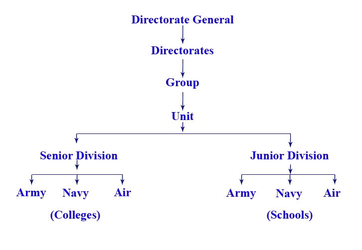

The National Cadet Corps (NCC) is the youth wing of the Indian Armed Forces with its headquarters in New Delhi, India. It is open to school and college students on a voluntary basis as a Tri-Services Organisation, comprising the Army, the Navy, and the Air Force. Cadets are given basic military training in small arms and drill. Officers and cadets have no liability for active military service once they complete their course.

The NCC flag for various units of the NCC was first introduced in 1951. The first flag was of the same pattern, colour, and size as used by various regiments of the Army. The only difference was that it had the NCC badge and unit designation placed in the centre. Later, it was felt that the flag should be designed to keep the inter-service character of the Corps. In 1954 the existing Tri-colour flag was introduced. The three colours in the flag depict the three services of the Corps: red for the Army, deep blue for the Navy, and light blue for the Air Force. The letters NCC and the NCC crest in gold in the middle of the flag encircled by a wreath of lotus give the flag a colourful look and a distinct identity.
An official song of the NCC titled "Kadam Mila Ke Chal" was adopted in 1963. This was, however, changed to the current NCC Song titled "Ham Sabh Bhartiya Hain" in October 1982. "Ham Sabh Bhartiya Hain" - NCC song is written by Sudarshan Fakir.
Hum Sab Bhartiya Hain, Hum Sab Bhartiya Hain
Apni Manzil Ek Hai,
Ha, Ha, Ha, Ek Hai,
Ho, Ho, Ho, Ek Hai.
Hum Sab Bhartiya Hain.
Kashmir Ki Dharti Rani Hai,
Sartaj Himalaya Hai,
Saadiyon Se Humne Isko Apne Khoon Se Pala Hai
Desh Ki Raksha Ki Khatir Hum Shamshir Utha Lenge,
Hum Shamshir Utha Lenge.
Bikhre Bikhre Taare Hain Hum Lekin Jhilmil Ek Hai,
Ha, Ha, Ha, Ek Hai
Hum Sab Bharatiya Hai.
Mandir Gurudwaare Bhi Hain Yahan
Aur Masjid Bhi Hai Yahan
Girija Ka Hai Ghariyaal Kahin
Mullah ki Kahin Hai Ajaan
Ek Hee Apna Ram Hain, Ek hi Allah Taala Hai,
Ek Hee Allah Taala Hain, Raang Birange Deepak Hain Hum,
Lekin Jagmag Ek Hai, Ha Ha Ha Ek Hai, Ho Ho Ho Ek Hai.
Hum Sab Bharatiya Hain, Hum Sab Bharatiya Hain.
The NCC in India was formed in 1948. It can be traced back to the ‘University Corps,’ which was created under the Indian Defence Act 1917, with the objective of making up for a shortage of personnel in the Army...
The motto of NCC is "Unity and Discipline", chosen during the 12th CAC meeting held on 12 Oct 1980.
The ‘Aims’ of the NCC laid out in 1988 continue to meet the requirements expected of it in the current socio-economic scenario of the country...
"I do hereby solemnly promise that I will serve my motherland most truly and loyally and that I will abide by the rules and regulations of the National Cadet Corps..."
"We, the cadets of the national cadet corps, do solemnly pledge that we shall always uphold the unity of India..."
The NCC is headed by the Director General (DG), an officer of three-star rank...
| Director No | Directorates |
|---|---|
| 1 | Andhra Pradesh & Telangana |
| 2 | Bihar & Jharkhand |
| 3 | Delhi |
| 4 | Gujarat & Dadra and Nagar Haveli and Daman and Diu |
| 5 | Jammu & Kashmir and Ladakh |
| 6 | Karnataka & Goa |
| 7 | Kerala & Lakshadweep |
| 8 | Madhya Pradesh & Chhattisgarh |
| 9 | Maharashtra |
| 10 | North East Region (Arunachal Pradesh, Assam, Manipur, Meghalaya, Mizoram, Nagaland, Tripura) |
| 11 | Odisha |
| 12 | Punjab, Haryana, Himachal Pradesh and Chandigarh |
| 13 | Rajasthan |
| 14 | Tamil Nadu, Puducherry and Andaman and Nicobar |
| 15 | Uttarakhand |
| 16 | Uttar Pradesh |
| 17 | West Bengal & Sikkim |
Each battalion or unit of NCC consists of several platoons or companies (coy). For senior division boys:
For senior division boys:
For senior division boys and senior wing girls:
Ranks and insignia include Cadet Senior Under Officer (CSUO), Cadet Junior Under Officer (CJUO), and others...
In the NCC, there are three certificates awarded to cadets after completing their respective training and passing examinations. These certificates are:
This is awarded to junior division cadets (school-level cadets) upon completing one to two years of training and attending a minimum of one camp.
This is awarded to senior division cadets (college-level cadets) after completing two years of training and attending a minimum of one camp in the second year.
This is the highest certificate in NCC, awarded to senior division cadets after completing three years of training, attending a minimum of two camps, and passing the examination. This certificate is highly valued and can provide advantages for career opportunities, especially in the defense forces.
The examinations for these certificates include written tests and practical assessments to evaluate the cadets' knowledge, skills, and discipline. These certifications hold significant importance in the career progression of cadets and can be used as credentials for applying to various professional roles.